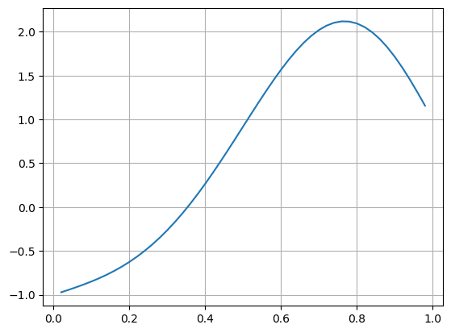

---
redirect_from:
  - "/differential-equations/boundary-value-problems"
interact_link: content/Differential_Equations/Boundary_Value_Problems.ipynb
kernel_name: julia-1.3
has_widgets: false
title: |-
  Boundary Value Problems
prev_page:
  url: /Differential_Equations/Higher_Order_Derivatives_Systems_Of_ODEs.html
  title: |-
    Higher Order Derivatives and Systems of ODEs
next_page:
  url: /Differential_Equations/DifferentialEquations_Package.html
  title: |-
    DifferentialEquations Package
suffix: .ipynb

comment: "***PROGRAMMATICALLY GENERATED, DO NOT EDIT. SEE ORIGINAL FILES IN /content***"
---

    <main class="jupyter-page">
    <div class="jb_cell">

<div class="cell border-box-sizing text_cell rendered"><div class="inner_cell">
<div class="text_cell_render border-box-sizing rendered_html">
<h1 id="Boundary-Value-Problems">Boundary Value Problems<a class="anchor-link" href="#Boundary-Value-Problems"> </a></h1><p>Another class of ODEs are <em>boundary value problems</em> (BVPs), where conditions on the solution are given at two different values for the independent variable (instead of at only an initial time, as for the IVPs). In these problems the independent variable is often a spatial coordinate, so we denote it by $x$. A model BVP problem is the Poisson equation with Dirichlet conditions at the endpoints, for example:</p>
$$
\begin{align*}
u''(x) &amp;= f(x), \quad 0&lt;x&lt;1 \\
u(0) &amp;= \alpha \\
u(1) &amp;= \beta
\end{align*}
$$<p>This problem can be solved using finite differences. Introduce $n+2$ points between 0 and 1, a grid spacing $h = 1/(n+1)$ and a corresponding grid of points $x_j = jh$, $j=0,1,\ldots,n+1$. At each of these grid points, we will approximate the solution numerically, that is, $u_j \approx u(x_j)$. To impose the differential equations, we need to estimate the second derivative $u''(x)$ at each grid point. We can do this using finite difference approximations, for example the second-order accurate formula</p>
$$
u''(x_j) \approx \frac{1}{h^2}(u_{j+1} - 2u_j + u_{j-1})
$$<p>Using this we can approximate the differential equation at all interior points:</p>
$$
u_{j+1} - 2u_j + u_{j-1} = h^2 f(x_j), \quad j = 1,\ldots, n
$$<p>The boundary values are simply imposed by setting $u_0 = \alpha$ and $u_{n+1} = \beta$. This leads to a tridiagonal linear system of equations $Au=b$ where</p>
$$
A=
\begin{bmatrix}
-2 &amp; 1 &amp; &amp;  \\
1 &amp; -2 &amp; 1  &amp; \\
  &amp; &amp; \ddots  &amp; \\
  &amp; &amp; 1 &amp; -2
\end{bmatrix}
\quad u=
\begin{bmatrix}
u_1 \\ u_2 \\ \vdots \\ u_n
\end{bmatrix}
\quad b=
\begin{bmatrix}
h^2f(x_1) - \alpha \\
h^2f(x_2) \\
\vdots \\
h^2f(x_n)-\beta
\end{bmatrix}
$$
</div>
</div>
</div>
</div>

<div class="jb_cell">

<div class="cell border-box-sizing text_cell rendered"><div class="inner_cell">
<div class="text_cell_render border-box-sizing rendered_html">
<h2 id="Example-BVP">Example BVP<a class="anchor-link" href="#Example-BVP"> </a></h2><p>For example we consider the boundary value problem</p>
$$
\begin{align*}
u''(x) &amp;= 10e^{2x}\sin(2\pi x), \quad 0&lt;x&lt;1 \\
u(0) &amp;= -1 \\
u(1) &amp;= 1
\end{align*}
$$<p>We use a grid with $n=49$ interior points (50 intervals).</p>

</div>
</div>
</div>
</div>

<div class="jb_cell">

<div class="cell border-box-sizing code_cell rendered">
<div class="input">

<div class="inner_cell">
    <div class="input_area">
<div class=" highlight hl-julia"><pre><span></span><span class="k">using</span> <span class="n">PyPlot</span><span class="p">,</span> <span class="n">PyCall</span><span class="p">,</span> <span class="n">LinearAlgebra</span>
</pre></div>

    </div>
</div>
</div>

</div>
</div>

<div class="jb_cell">

<div class="cell border-box-sizing code_cell rendered">
<div class="input">

<div class="inner_cell">
    <div class="input_area">
<div class=" highlight hl-julia"><pre><span></span><span class="n">n</span> <span class="o">=</span> <span class="mi">49</span>
<span class="n">h</span> <span class="o">=</span> <span class="mi">1</span> <span class="o">/</span> <span class="p">(</span><span class="n">n</span><span class="o">+</span><span class="mi">1</span><span class="p">)</span>
<span class="n">x</span> <span class="o">=</span> <span class="n">h</span><span class="o">*</span><span class="p">(</span><span class="mi">1</span><span class="o">:</span><span class="n">n</span><span class="p">)</span>
<span class="n">f</span><span class="p">(</span><span class="n">x</span><span class="p">)</span> <span class="o">=</span> <span class="mi">10</span><span class="n">exp</span><span class="p">(</span><span class="mi">2</span><span class="n">x</span><span class="p">)</span><span class="o">*</span><span class="n">sin</span><span class="p">(</span><span class="mi">2</span><span class="nb">π</span><span class="o">*</span><span class="n">x</span><span class="p">)</span>

<span class="n">A</span> <span class="o">=</span> <span class="kt">SymTridiagonal</span><span class="p">(</span><span class="o">-</span><span class="mi">2</span><span class="n">ones</span><span class="p">(</span><span class="n">n</span><span class="p">),</span> <span class="n">ones</span><span class="p">(</span><span class="n">n</span><span class="p">))</span>
<span class="n">b</span> <span class="o">=</span> <span class="n">h</span><span class="o">^</span><span class="mi">2</span><span class="o">*</span><span class="n">f</span><span class="o">.</span><span class="p">(</span><span class="n">x</span><span class="p">)</span>
<span class="n">b</span><span class="p">[</span><span class="mi">1</span><span class="p">]</span> <span class="o">-=</span> <span class="o">-</span><span class="mi">1</span>
<span class="n">b</span><span class="p">[</span><span class="k">end</span><span class="p">]</span> <span class="o">-=</span> <span class="mi">1</span>
<span class="n">u</span> <span class="o">=</span> <span class="n">A</span> <span class="o">\</span> <span class="n">b</span>

<span class="n">plot</span><span class="p">(</span><span class="n">x</span><span class="p">,</span> <span class="n">u</span><span class="p">)</span>
<span class="n">grid</span><span class="p">(</span><span class="kc">true</span><span class="p">)</span>
</pre></div>

    </div>
</div>
</div>

<div class="output_wrapper">
<div class="output">

<div class="jb_output_wrapper }}">
<div class="output_area">


<div class="output_png output_subarea ">

</div>

</div>
</div>
</div>
</div>

</div>
</div>

 


    </main>
    